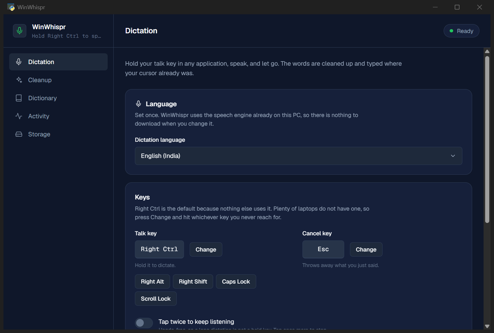

Hold a key anywhere in Windows, speak, and let go. Your words are typed where your cursor already is.
Free and open source. No account.

How it works
There is no model to download and nothing to configure. It works the minute it is installed.
WinWhispr starts as a small dot in the corner of your screen. Approve the microphone the first time and it never asks again.
An email, a chat, a document, a form, a terminal. WinWhispr types into whatever window has focus, so it works in applications that have no dictation of their own.
Your words appear as you say them and finish arriving when you let go. No Right Ctrl on your laptop? Press Change in settings and hit whichever key you never reach for.
Speech comes out messier than writing. WinWhispr tidies each sentence with fixed rules, so the result is the same every time and nothing is ever invented.
Every "um" and "uh", every repeated word, every stutter. Say "comma" or "new line" and you get the real thing.
Correct a misheard name twice and WinWhispr remembers the spelling for good. Only the exact words you taught it are ever changed, so a word that merely sounds similar is safe.
Each phrase is typed the moment it is recognised, not saved up until you release the key.
Snippets expand from a spoken trigger. Your dictionary fixes the terms recognition keeps missing.
Every transcript, searchable, with the application it went into, and how much time you have saved.
Speech models are trained on captioned video, and silence makes them emit the captions that ended those videos. WinWhispr knows those phrases and drops them, but only when the recognizer also reports that it heard no speech. If you genuinely say "thanks for watching", you get it.
Out of your way
While it waits, WinWhispr is a dot in a corner you choose, at a third opacity. It grows into a pill while you speak and shrinks back once your words are typed.
Double-click it to open the app. Right-click it to quit. Drag it wherever you like.
Dictation software listens to you. You should know exactly what that means before you install it.
WinWhispr uses the speech recognition already built into Windows rather than shipping its own model, and that service does the work on its own servers. That is why it needs an internet connection, and why there is nothing for you to download.
Your history, settings, dictionary and snippets are files on your own machine. Nothing is uploaded and there is no account.
Nothing is recorded in the background, and the dot turns green whenever the microphone is open, so you can always see it.
All of it, including the part that decides what to do with your words.
Windows 10 and 11. Roughly a minute to install, and nothing to set up afterwards.